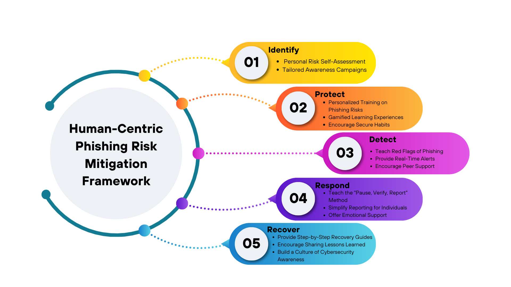

By Crystalyn R. Danga and Clarisse Irish J. Paller
HUMAN-CENTRIC PHISHING RISK MITIGATION AND STRATEGIES
A Phishing Awareness Framework and Strategies tailored to the specific needs faced by the Polytechnic University of the Philippines - Quezon City Campus Personnel.
Phishing remains one of the most significant cybersecurity threats today, particularly in academic environments where students, faculty, and staff handle sensitive information. To combat this growing threat, a human-centric phishing awareness framework can be implemented to educate and empower individuals within the university. This framework follows the National Institute of Standards and Technology (NIST) Cybersecurity Framework (CSF) and focuses on five key areas: Identify, Protect, Detect, Respond, and Recover.
Figure 1. Human-Centric Phishing Risk Mitigation Framework
1. Identify
Understanding Personal Phishing Risk
Many individuals are unaware of their own susceptibility to phishing attacks. To bridge this gap, universities can implement:
Personal Risk Assessment
- An interactive online quiz or checklist can help students and staff evaluate their phishing risk based on behaviors such as password reuse and responding to urgent messages. This tool can provide personalized feedback and tips for improvement.
Tailored Awareness Campaigns
- Different age groups and demographics perceive phishing risks differently. Tailoring awareness campaigns ensures that messages resonate effectively. For instance:
- Younger students may be more vulnerable to curiosity-driven risks and social media phishing.
- Older faculty and staff may be more susceptible to fear-based tactics and financial scams.
2. Protect
Equipping Individuals with Knowledge and Tools
Protection begins with education and the adoption of secure habits. Universities can enhance phishing awareness through:
Personalized Training
- Interactive workshops and online modules can teach individuals how to recognize phishing emails, use password managers, and enable multi-factor authentication (MFA) for added security.
Gamified Learning Experiences
- Since distractions and time pressure can make phishing detection difficult, gamification can improve engagement. A phishing simulation game, where players identify phishing attempts in realistic scenarios, can be an effective learning tool.
- Want to try our prototype "PhishGuard" Game? Click here!
- PhishGuard Games
Secure Habits Challenge
- Encouraging students and staff to develop secure online habits can reduce risks. Individuals can earn points for verifying links before clicking, updating passwords regularly, and reporting suspicious emails.
3. Detect
Recognizing Phishing Attempts in Real-Time
Teaching individuals how to detect phishing attempts before they fall victim is crucial. Effective strategies include:
Teaching Red Flags of Phishing
- A simple checklist can help individuals analyze emails and messages. Key indicators include:
- Suspicious sender email addresses
- Urgent or fear-inducing language
- Spelling and grammar errors
- Mismatched or misleading links
Real-Time Alerts
- Browser extensions or email plugins can flag suspicious links and warn users before they click.
Encouraging Peer Support
- A "Phishing Buddies" program can provide individuals with a trusted peer to consult when they receive suspicious messages, fostering a collaborative security culture.
4. Respond
Taking Action Against Phishing Attempts
Once a phishing attempt is identified, individuals should know how to respond effectively. Universities can facilitate this through:
The "Pause, Verify, Report" Method
- A structured approach can reduce impulsive reactions:
- Pause – Take a moment to assess the situation.
- Verify – Check the sender’s email, look for red flags, and contact the supposed sender through a trusted channel.
- Report – Use the university’s reporting system to flag the phishing attempt.
Simplified Reporting
- A one-click "Report Phishing" button within the university’s email system can make reporting easier and faster.
Emotional Support
- Phishing attacks can cause stress and embarrassment. Providing counseling services or peer support groups can help individuals recover and learn from their experiences.
5. Recover
Building Resilience After a Phishing Incident
Recovery is just as important as prevention. Universities can help individuals bounce back and prevent future attacks by:
Step-by-Step Recovery Guides
- Easy-to-follow guides for different scenarios (e.g., "What to do if you clicked a phishing link," "How to reset your passwords") can empower victims to take immediate corrective action.
Encouraging Sharing of Lessons Learned
- Hosting "Phishing Storytime" sessions where individuals share their experiences can promote collective learning and reinforce cybersecurity awareness.
Building a Culture of Cybersecurity Awareness
- Cybersecurity should be seen as a shared responsibility. Universities can reinforce phishing awareness through posters, social media campaigns, and recognition programs that highlight individuals who demonstrate good security practices.
A human-centric phishing awareness framework empowers individuals by focusing on education, engagement, and community support. By helping students, faculty, and staff identify, protect, detect, respond, and recover from phishing threats, universities can create a more resilient cybersecurity culture. Implementing these strategies ensures that individuals feel confident and capable of mitigating phishing risks in their daily lives.